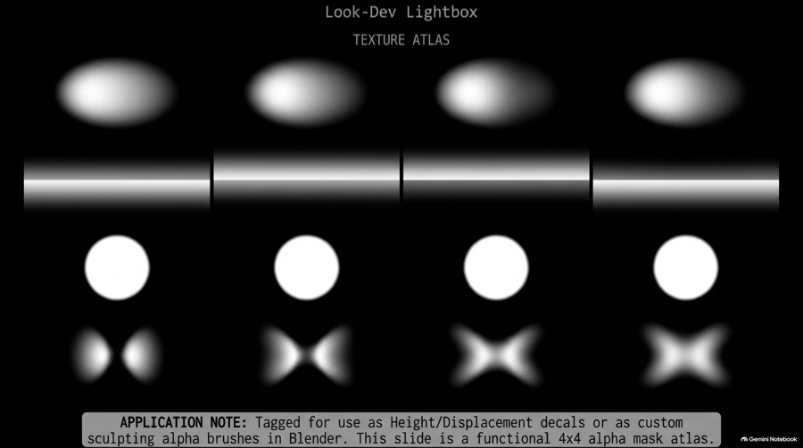
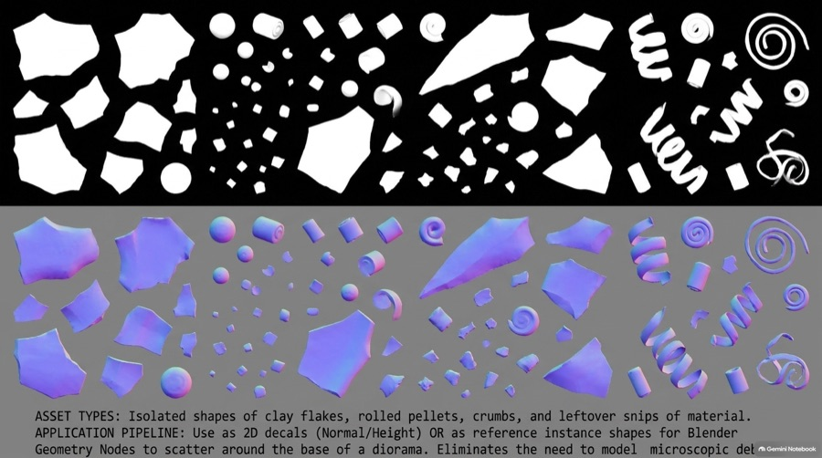
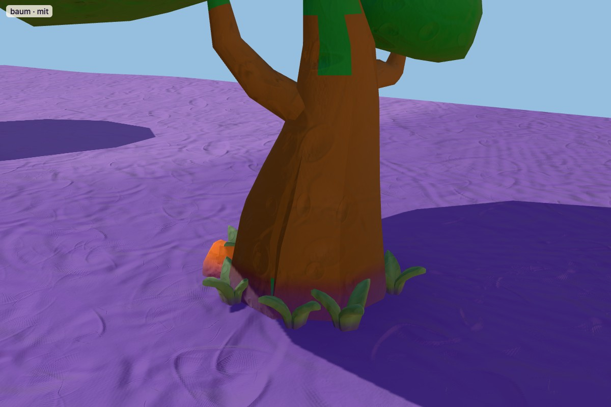
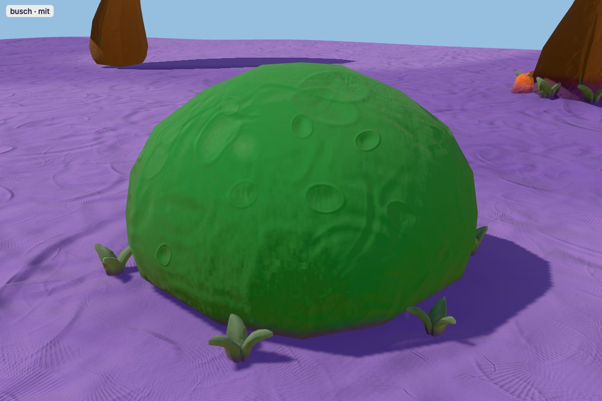
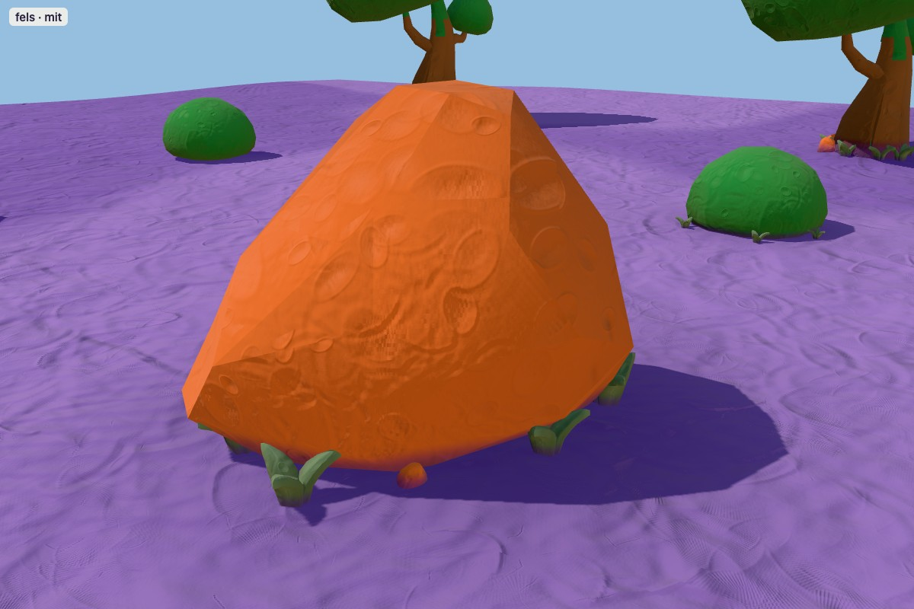

Probe vor jeder Insel (QA §0b.5): dasselbe Licht wie im Worldbuilder, derselbe Boden, links ohne, rechts mit den drei Etherington-Techniken. Feste Kameras auf den Fuß; Seite /probe.html, Presets baum-ohne … fels-mit. Palette Canyon.

Diorama Texture Atlas: radiale Kontakt-Blobs

Atlas: Krümel und Brocken am Fuß
Baum · KayKit Kugelbaum
Der Baum ist hier gewachsen, nicht hingestellt. Seine Wurzeln haben die Erde am Stamm aufgewölbt (Eingraben); Laub und Regen dunkeln die Erde um ihn (Kontakt); im Schatten am Fuß wächst Gras, ein Brocken ist gegen den Stamm gerollt (Überlappen).
mit Eingraben · Kontakt · Überlappen

Messwerte
Höhe 3.25 H · eingesunken 7 % · Erdhügel 0.33 · Kontaktband 0.06 der Höhe · 7 Grasbüschel (5 %) · 3 Bröckel (8 %)
Technik → Umsetzung
Eingraben: Fuß 5–15 % in den Boden, weicher Erdhügel. Kontakt: Kontakt-Blob (AO) und dunklere Erde am Boden, Bodenfarbe zieht am Fuß hoch. Überlappen: Büschel und Bröckel auf der Bodenlinie, je unter 15 % der Objekthöhe.
Busch · KayKit Kuppelbusch
Der Busch wächst aus dem Boden: Seine Zweige hängen bis auf die Erde, darunter ist es feucht und dunkel. Gras schiebt sich unter dem Rand hervor.
mit Eingraben · Kontakt · Überlappen

Messwerte
Höhe 0.6 H · eingesunken 12 % · Erdhügel 0.1 · Kontaktband 0.1 der Höhe · 6 Grasbüschel (13 %) · 2 Bröckel (12 %)
Technik → Umsetzung
Eingraben: Fuß 5–15 % in den Boden, weicher Erdhügel. Kontakt: Kontakt-Blob (AO) und dunklere Erde am Boden, Bodenfarbe zieht am Fuß hoch. Überlappen: Büschel und Bröckel auf der Bodenlinie, je unter 15 % der Objekthöhe.
Fels · KayKit Felsbrocken
Der Brocken ist vom Hügel gerollt und auf seiner breiten Seite zur Ruhe gekommen. Erde hat sich angeweht und ihn eingebettet; im Windschatten wächst Gras, abgeplatzte Bröckel liegen daneben.
mit Eingraben · Kontakt · Überlappen

Messwerte
Höhe 1.35 H · eingesunken 15 % · Erdhügel 0.29 · Kontaktband 0.1 der Höhe · 6 Grasbüschel (13 %) · 3 Bröckel (12 %)
Technik → Umsetzung
Eingraben: Fuß 5–15 % in den Boden, weicher Erdhügel. Kontakt: Kontakt-Blob (AO) und dunklere Erde am Boden, Bodenfarbe zieht am Fuß hoch. Überlappen: Büschel und Bröckel auf der Bodenlinie, je unter 15 % der Objekthöhe.